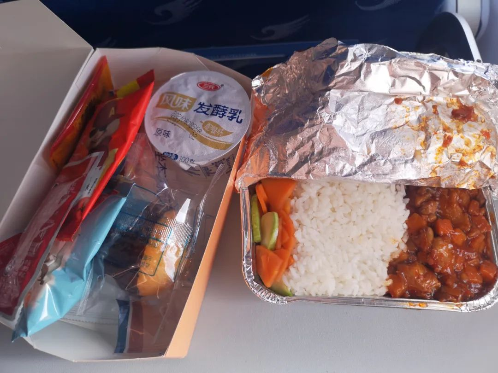
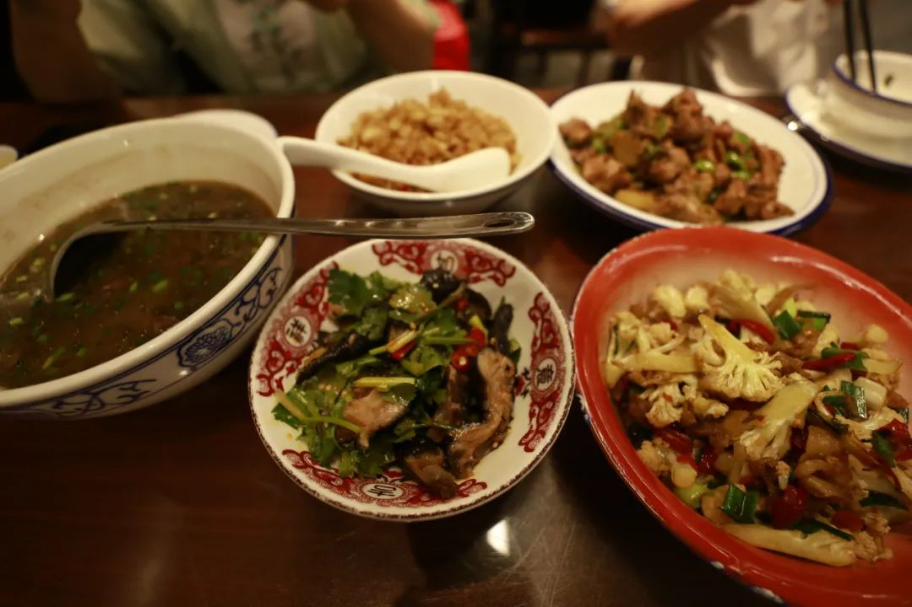
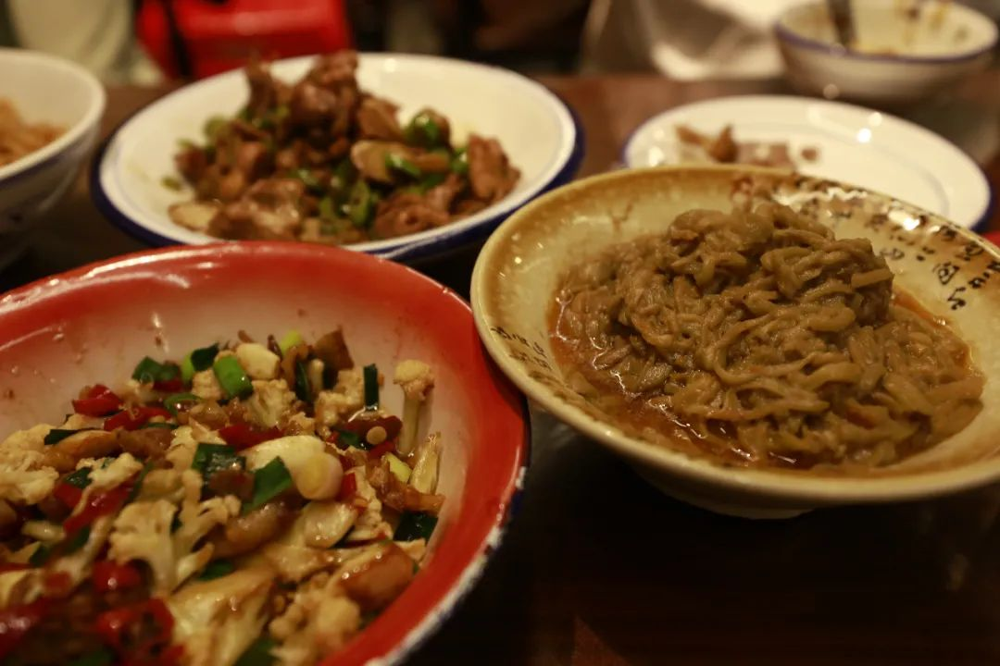
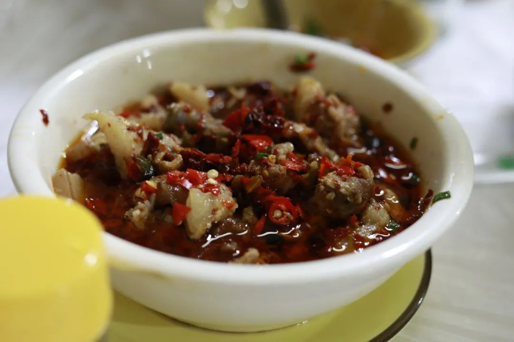
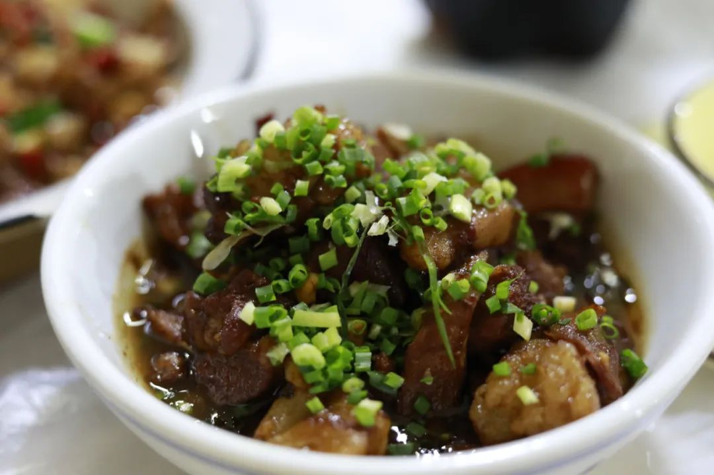

承上一次没有写完的，是在航班上的事。从大兴飞黄花，在航班上突然笑了出来，因为看到了这个模样：
笑出来的原因是因为，在坡有个很迷醉的说法：Fly to No-where也叫伪出国。因为实在是太好笑了以致于但凡和谁说起这件事情的时候我都是一脸笑，怎么会有这样的事情发生。大抵是因为疫情期间，出境新加坡去其他国家总会有各种各样的限制。于是新加坡航空公司就推出了一种伪出国的模式：你和平常一样地在预订机票的窗口订下机票、拿上护照去樟宜机场排队安检通关、然后坐到飞机上，飞机上有空姐空少穿着不同时代的飞行制服来四处走动、舱内广播也会说我们要起飞了请您做好安全准备，接着就有本地大厨精心准备的飞机餐我记得是椰浆饭、沙爹和一些酒水，大概两三个小时候，舱内广播就会说我们回到了樟宜机场祝您旅途愉快再见。所以总结起来就是，花钱去飞机上吃飞机餐、飞机不起飞，用的噱头是你可以只用花上600新（约合¥3000）就能享受到平常几千新才能享受到的头等舱服务和本地美食。Singapore Airlines' A380 Restaurant: Pricing Revealed | One Mile at a Time -- English version keywords: Restaurant A380 @ Changi就算是作为公益地去支持裁员很多的空乘公司，方式竟然是这样的吗飞机餐。不是一点点无语而是，可能在坡就没有卷起来，人们的想象力仅此而已而且赚钱也想不到更好的方式。前两天在笨萝卜和人说起的时候，大家都很无语。不过Illuminati立刻想到：那为什么不给乘客都配一副VR眼镜？这样免去起飞的燃油什么乱七八糟的，至少还能说是在舱外欣赏了什么各种国家的风光（虽然是伪装但也能做精致一点吧）紧接着就可以按照不同的国家定价，类似泰国就会便宜一点因为航线短，墨西哥就会贵一点因为要飞更久才能到。话说回来，这么好的点子就算卖给新航，人家也不一定会接受。因为就简单地觉得，现在在坡的VR技术以及窗户玻璃的控制还对人不友好之类的。总之会给出一些莫名其妙的原因。这些原因给得也就像Fly to No-where一样莫名其妙。而且就这样也还有体验者高呼：太值了！故而我在大兴飞黄花的路上，甫打开餐食盒，就想到了这件事情。以及我刚到广州隔离的时候，人家麦乐送早就给我发来了一个二维码，让我加入本地的群聊我们有更多优惠；还有各种的外卖店，在外卖盒里塞小纸条，好评返现。在坡就很硬扎，连在餐厅里点菜的时候，我以为扫码是在线点单，实际上是下载下来一个PDF版的菜单——连图片也没有只是文字描述说有哪些sets and add-ons.世界是越来越清晰的。这是世界在我们眼前变得丰富而有锐度。不同的地方、不同的朋友和不同的菜式，这些聪明的不聪明的内容构成了对事体验的认识。Elizabeth Pisan在印尼etc：众神遗落的珍珠里也提到了自己作为传染病学的博士，在对整体样本的有偏估计时更倾向于对单个对象进行深入访谈。这位作者之前也有一段经历，是作为记者的。不单单指花费开销，我想，这还包括对于生活愿景的探讨。对上飞机很热衷，而且在收听播报享受服务中很快乐的人，似乎也说得过去；前两天在长沙的公众号上看，武汉人气爆棚的额日料开到长沙场场爆满，点进去一看，是我之前吃过但并是口味平平。和爸妈一起去测评了西园北里的鲁哥饭店。实话说来是，中规中矩：正常的湘菜也有点自己家的特色比如咸蛋黄茄子。从坡回国之后第一次在国内留意到有咸蛋黄某某的存在。其他的菜式就做得是正常湘菜的模样，没有离谱也是往好吃的方向在努力。环境就是网红环境喏~嘈嘈切切，但是比笨萝卜还是好了不少。

笨萝卜是，出门之后连喉咙都是嘶哑的因为要用喊。所以是什么斯文都可以不管的餐厅，规规矩矩都可以拿来扫地，况且菜也真正有便宜而好吃。大概是不用care接待排面的好朋友，到了长沙我请吃饭的话都会先去这一家的吧。



一个多月没有拍照之后，果真有些不适应。而且LR还在坡的主机里边，当现在没有一个足够大内存的盘来放raw格式的文件，我并不知道怎么来好好修图。所以就先放在储存卡里吧，也不知道什么时候才会在这些事情上有一个聪明的结果。也许是不保存raw格式了毕竟也不调。
也有可能是等糟心的事情忙出个头了再来想怎么把生活品质提升一下：类似1+小新百微这样的好东西和其他聪明的话剧音乐剧（错过上影节是必然的但也没办法子）